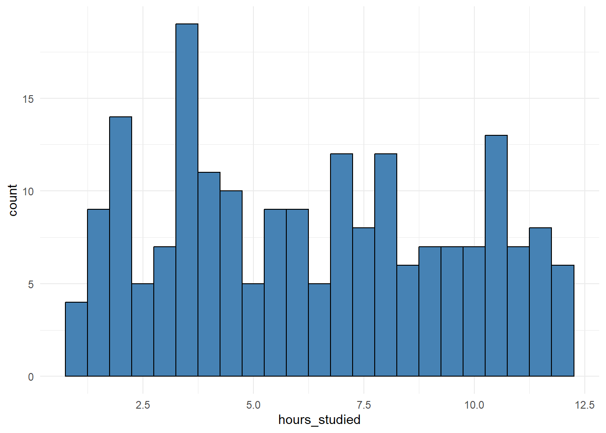
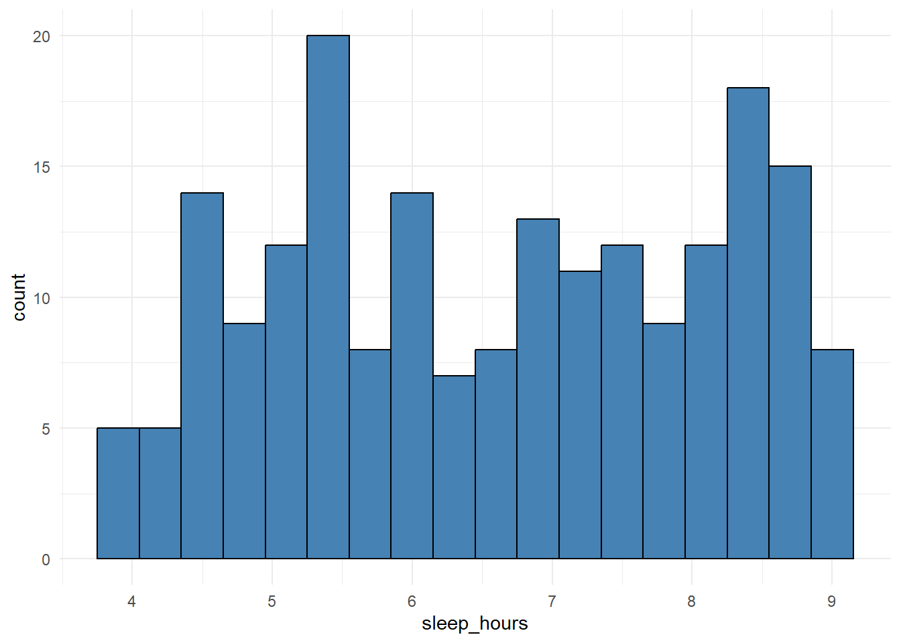
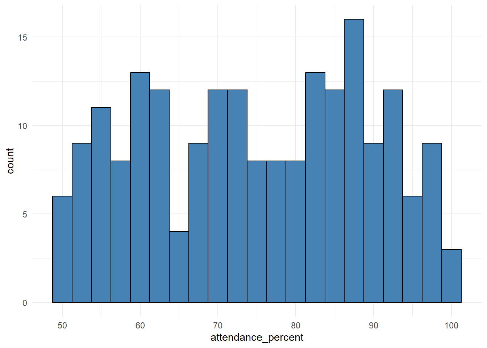
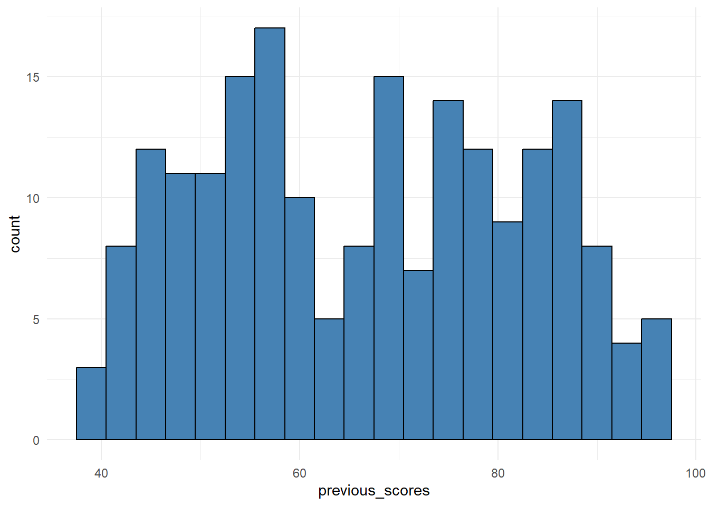
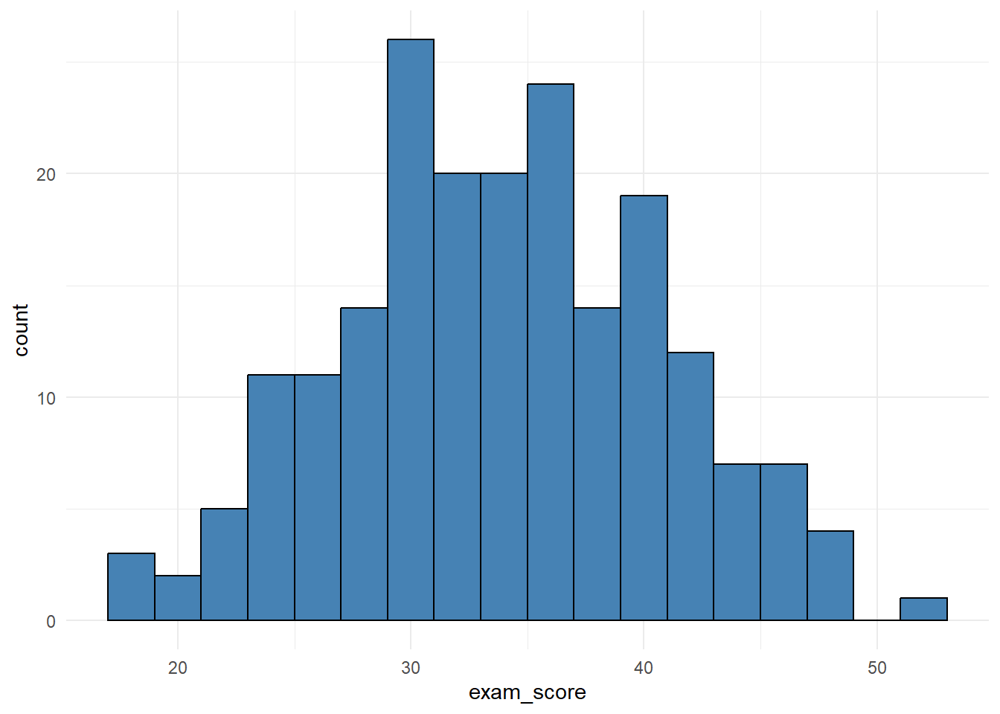
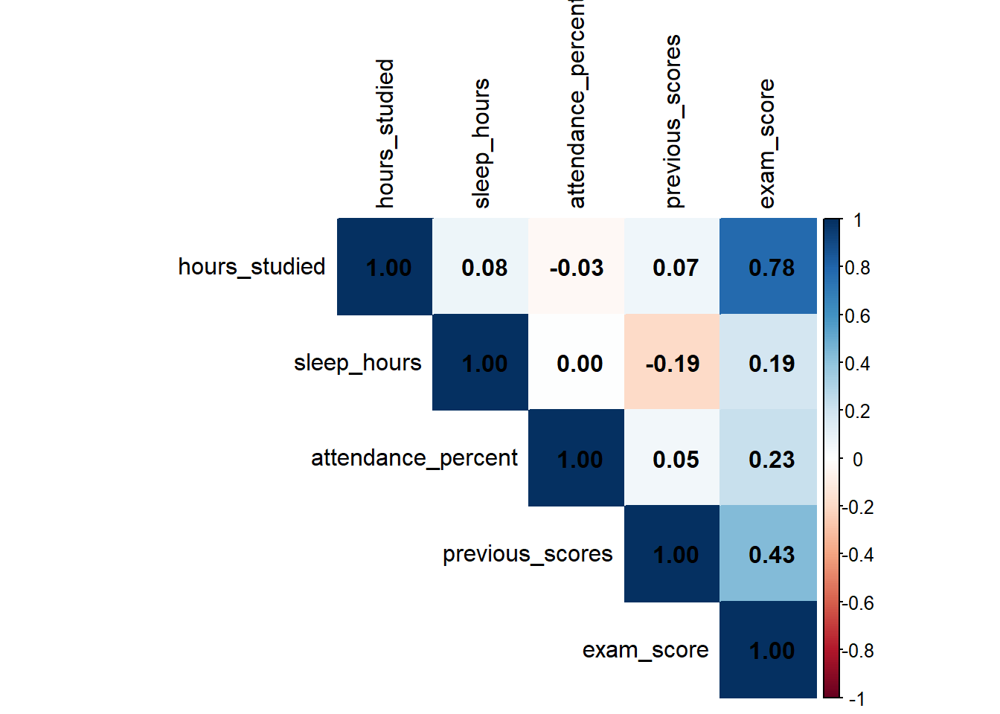
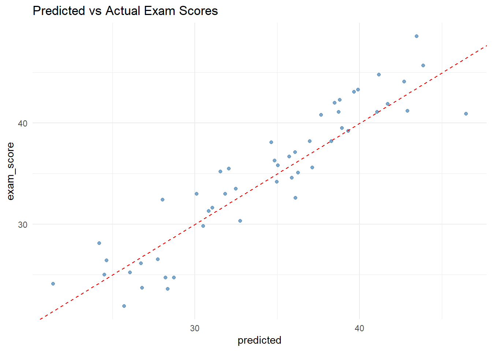
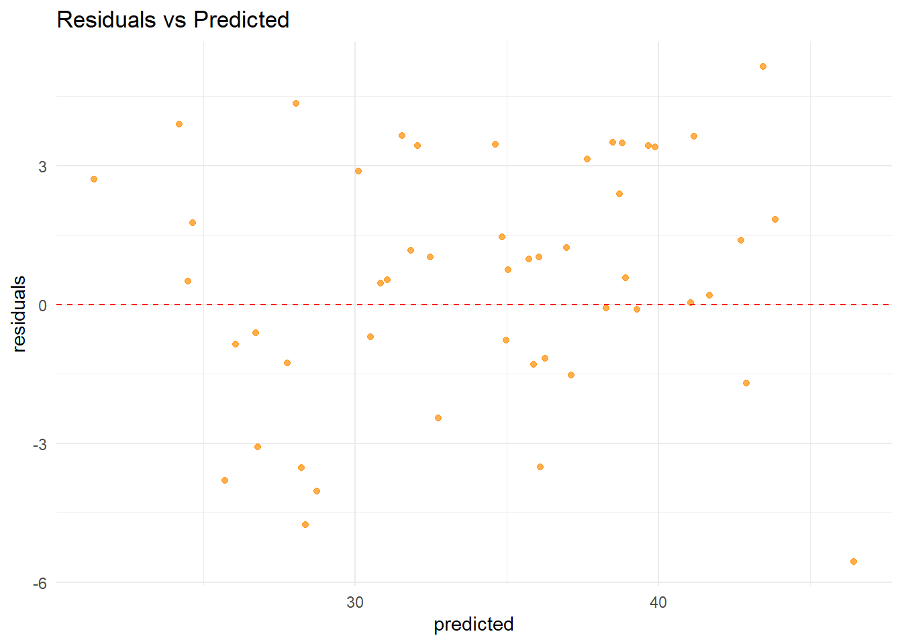

library(tidyverse)
library(table1)
library(car)
library(stargazer)
library(corrplot)
library(broom)
library(rsample)
library(tibble)Student Test Scores Prediction
About the Document
This document explores a dataset of student exam scores. The goal is to understand key factors influencing exam performance and to build a regression model that predicts exam scores based on study behavior and prior performance. The workflow covers data cleaning, exploratory data analysis (EDA), modeling, diagnostics, and predictive evaluation.
Libraries
Data Input
student_data <- read_csv("data/student_exam_scores.csv")Data Checks
Are there missing values?
Are student IDs unique?
What do the summary statistics look like?
colSums(is.na(student_data)) student_id hours_studied sleep_hours attendance_percent
0 0 0 0
previous_scores exam_score
0 0 n_distinct(student_data$student_id)[1] 200table1(~ hours_studied + sleep_hours + attendance_percent +
previous_scores + exam_score, data = student_data)| Overall (N=200) |
|
|---|---|
| hours_studied | |
| Mean (SD) | 6.33 (3.23) |
| Median [Min, Max] | 6.15 [1.00, 12.0] |
| sleep_hours | |
| Mean (SD) | 6.62 (1.50) |
| Median [Min, Max] | 6.70 [4.00, 9.00] |
| attendance_percent | |
| Mean (SD) | 74.8 (14.2) |
| Median [Min, Max] | 75.3 [50.3, 100] |
| previous_scores | |
| Mean (SD) | 66.8 (15.7) |
| Median [Min, Max] | 67.5 [40.0, 95.0] |
| exam_score | |
| Mean (SD) | 34.0 (6.79) |
| Median [Min, Max] | 34.1 [17.1, 51.3] |
Exploratory Data Analysis
Histograms
Hours Studied
student_data %>%
ggplot(aes(x = hours_studied, fill = hours_studied)) +
geom_histogram(binwidth = .5, fill = 'steelblue', color = 'black') +
theme_minimal() 
Sleep Hours
student_data %>%
ggplot(aes(x = sleep_hours, fill = sleep_hours)) +
geom_histogram(binwidth = .3, fill = 'steelblue', color = 'black') +
theme_minimal() 
Attendance Percentage
student_data %>%
ggplot(aes(x = attendance_percent, fill = attendance_percent)) +
geom_histogram(binwidth = 2.5, fill = 'steelblue', color = 'black') +
theme_minimal() 
Previous Score
student_data %>%
ggplot(aes(x = previous_scores, fill = previous_scores)) +
geom_histogram(binwidth = 3, fill = 'steelblue', color = 'black') +
theme_minimal() 
Exam Score
student_data %>%
ggplot(aes(x = exam_score, fill = exam_score)) +
geom_histogram(binwidth = 2, fill = 'steelblue', color = 'black') +
theme_minimal() 
Correlation Matrix
student_data %>%
select(hours_studied, sleep_hours, attendance_percent, previous_scores,
exam_score) %>%
cor(use = 'complete.obs') %>%
corrplot(method = 'color', type = 'upper', tl.col = 'black',
addCoef.col = 'black')
Modeling
Model Fit
set.seed(123)
split <- initial_split(student_data, prop = 0.75)
training_data <- training(split)
test_data <- testing(split)
model1 <- lm(exam_score ~ hours_studied + sleep_hours + attendance_percent +
previous_scores, data = training_data)
summary(model1)
Call:
lm(formula = exam_score ~ hours_studied + sleep_hours + attendance_percent +
previous_scores, data = training_data)
Residuals:
Min 1Q Median 3Q Max
-5.2035 -2.3643 -0.0085 2.3272 5.1443
Coefficients:
Estimate Std. Error t value Pr(>|t|)
(Intercept) -3.15390 1.96714 -1.603 0.111
hours_studied 1.49212 0.07322 20.379 < 2e-16 ***
sleep_hours 0.99959 0.15636 6.393 2.09e-09 ***
attendance_percent 0.11868 0.01627 7.293 1.82e-11 ***
previous_scores 0.18019 0.01468 12.275 < 2e-16 ***
---
Signif. codes: 0 '***' 0.001 '**' 0.01 '*' 0.05 '.' 0.1 ' ' 1
Residual standard error: 2.788 on 145 degrees of freedom
Multiple R-squared: 0.8339, Adjusted R-squared: 0.8293
F-statistic: 182 on 4 and 145 DF, p-value: < 2.2e-16Assumption Checks
vif(model1) hours_studied sleep_hours attendance_percent previous_scores
1.022019 1.044496 1.001843 1.057466 par(mfrow=c(2,2))
plot(model1)
Prediction and Evalutation
Metrics
preds <- predict(model1, newdata = test_data)
results <- tibble(
Metric = c("R²", "MAE", "RMSE"),
Value = c(
cor(preds, test_data$exam_score)^2,
mean(abs(preds - test_data$exam_score)),
sqrt(mean((preds - test_data$exam_score)^2))
)
)
results# A tibble: 3 × 2
Metric Value
<chr> <dbl>
1 R² 0.862
2 MAE 2.17
3 RMSE 2.63 Visual Evalutation
test_data %>%
mutate(predicted = preds) %>%
ggplot(aes(x = predicted, y = exam_score)) +
geom_point(color = "steelblue", alpha = 0.7) +
geom_abline(intercept = 0, slope = 1, color = "red", linetype = "dashed") +
theme_minimal() +
labs(title = "Predicted vs Actual Exam Scores")
test_data %>%
mutate(predicted = preds, residuals = exam_score - predicted) %>%
ggplot(aes(x = predicted, y = residuals)) +
geom_point(color = "darkorange", alpha = 0.7) +
geom_hline(yintercept = 0, color = "red", linetype = "dashed") +
theme_minimal() +
labs(title = "Residuals vs Predicted")
Conclusion
The analysis of student exam scores showed that study habits, prior performance, and class attendance all play meaningful roles in explaining academic outcomes. Among the predictors, hours studied had the strongest positive association with exam scores, followed by previous scores, which also provided a substantial contribution. Sleep hours and attendance percent had weaker but still relevant effects.
The regression model explained a large proportion of the variance in exam scores, with an R² of 0.86 on the test set, and prediction errors averaging only 2–3 points. Diagnostic checks confirmed that regression assumptions were reasonably satisfied, with no signs of multicollinearity and residuals distributed fairly evenly.
Overall, the model demonstrates both good explanatory power and solid predictive accuracy on unseen data. While linear regression provides a clear and interpretable framework, future improvements could include testing interaction effects (e.g., whether study hours matter more for students with lower prior scores) or experimenting with regularized regression methods to explore model stability.